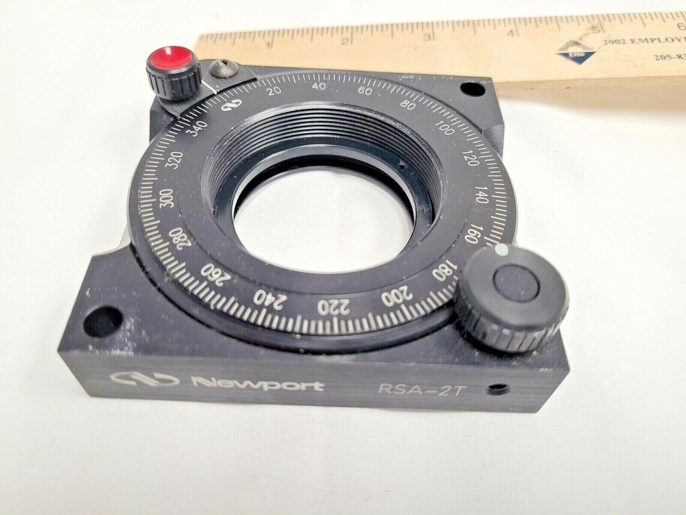
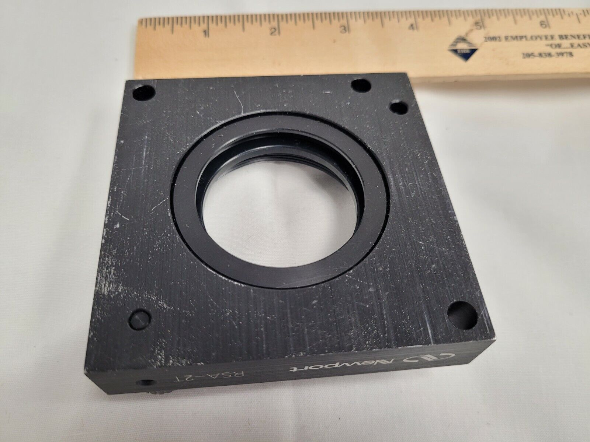
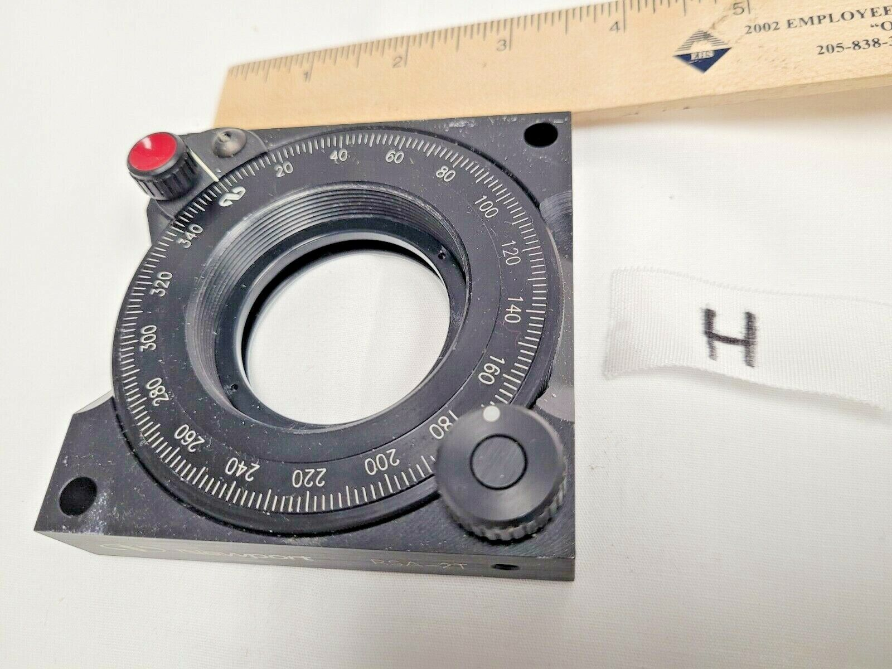
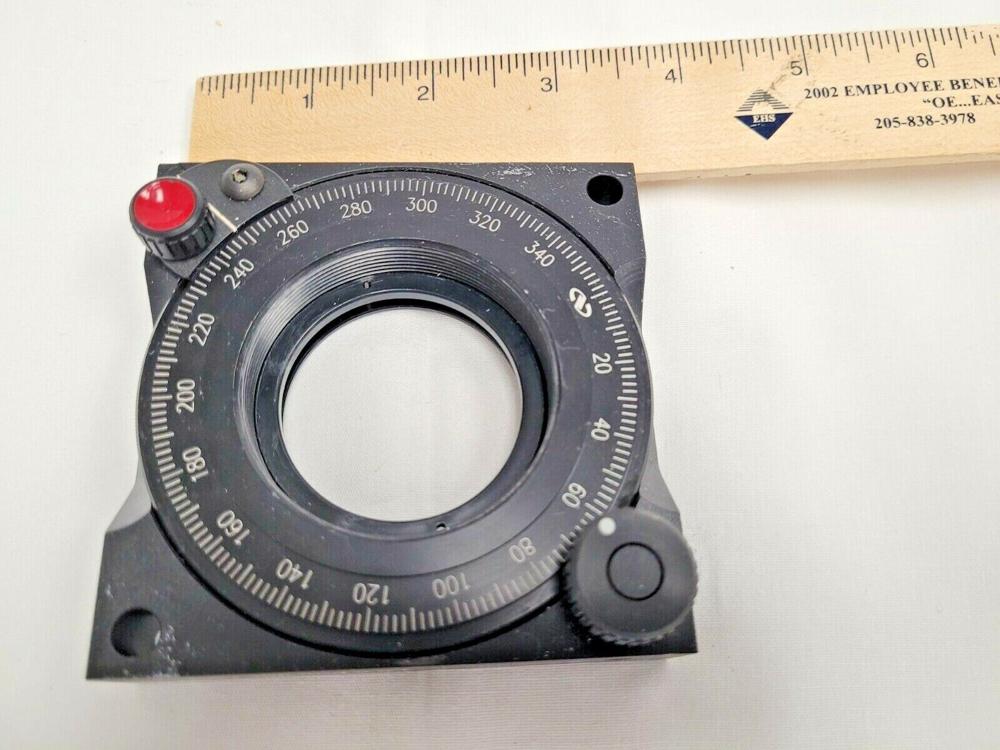
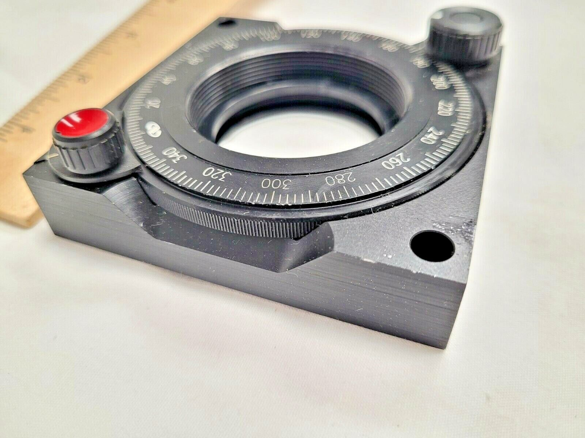
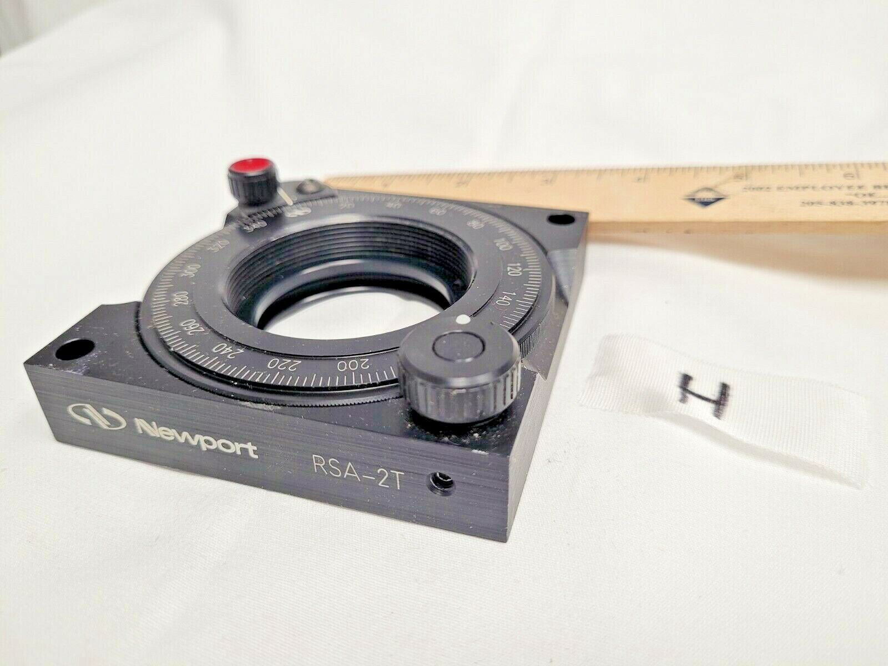
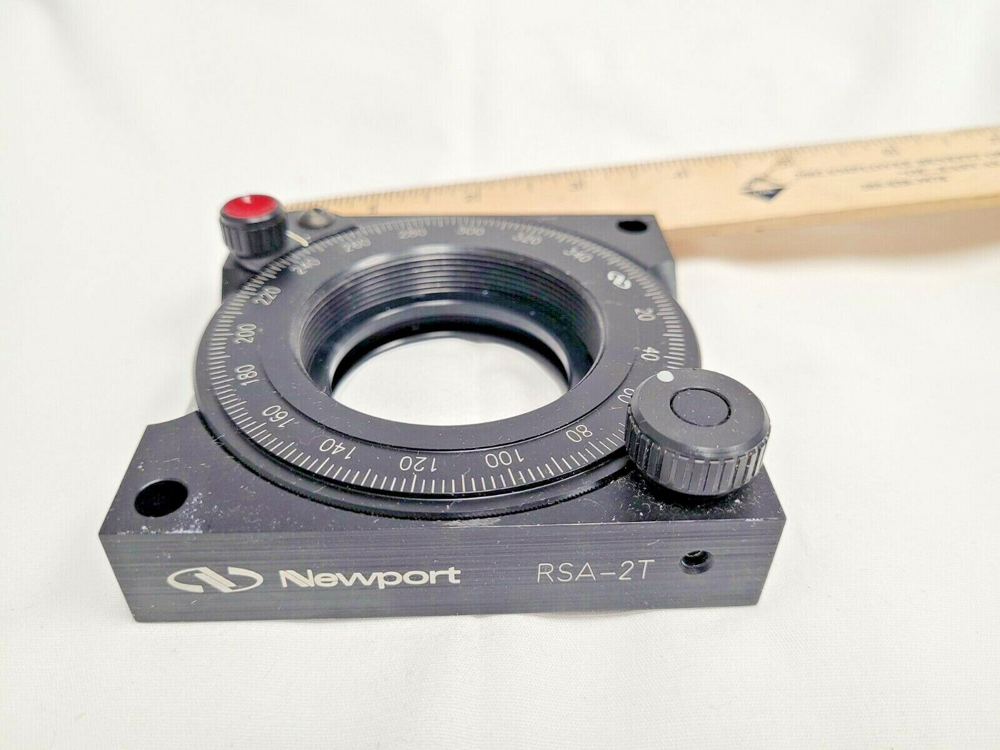
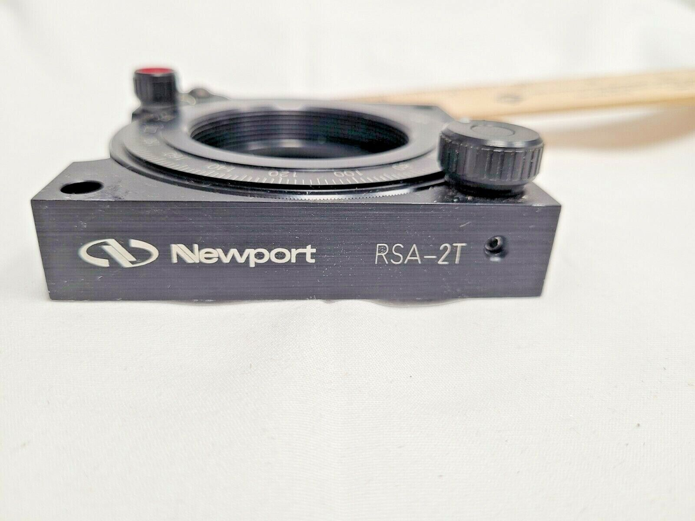
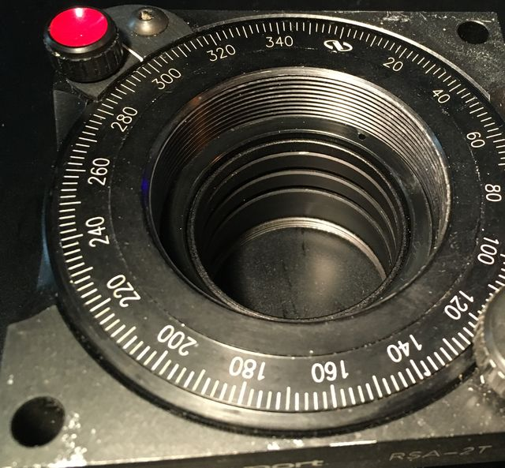

back

eBay item number: 193882112184
Item specifics
Condition: Used
Seller Notes: "Used (good working, not good condition, many scratched and dent)
It was removed from machine of good condition. But the parts has some scratch and used marks.
Review through the photo. Fortunately, keeps good working condition."
Model: RIGHT W40 (GFG40-40)
Specification: Stage Size : 40mm x 40mm x 20mm
If you want review actual item then request actual image before buying, send message.
11 Jan 2023
Delivered nicely packaged; deployed on mini-measure scope:

eBay item number: 275287885498
Item specifics
Condition: Used
Seller Notes: "nice overall. Minor scuff and use marks. Turns smoothly !"
|  |
 |
|  |
 |
|  |
 |
|  |
 |
received 11 Jan 2023
Internal thread is 2.063-20; Delrin retainer ring was included.
M42 entension tube threads fit loosely thru the back flange;
retainer ring clamps T2-M42 adapter ring screwed to extension tube,
centering and securing extension tubes:
